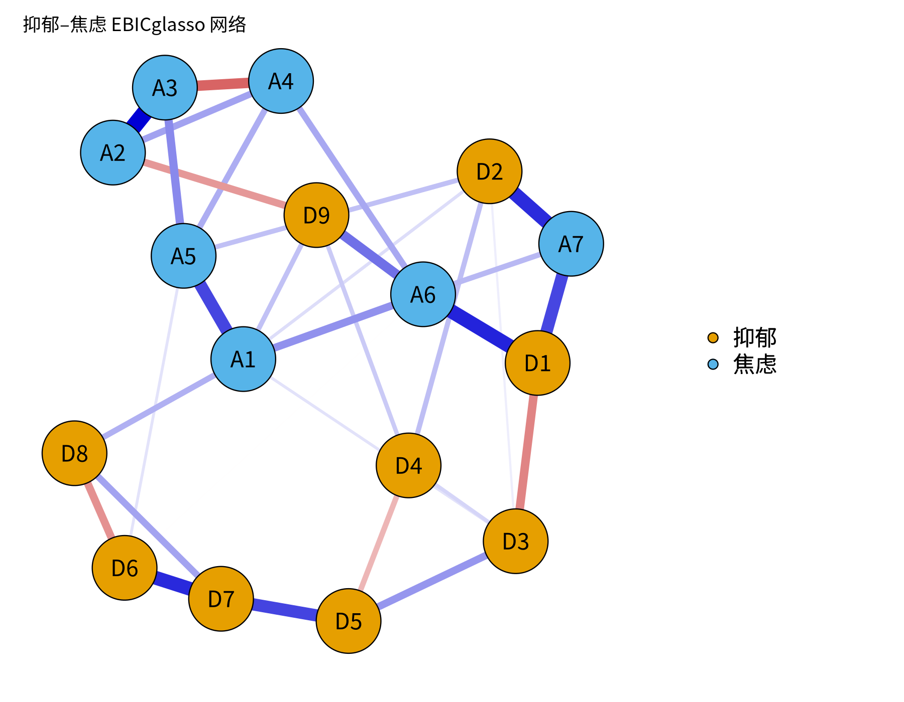

用 qgraph 与 bootnet 估计并可视化网络
本课学习目标
- 用 bootnet::estimateNetwork() 估计 EBICglasso 网络
- 掌握 qgraph 绘图参数：layout、groups、labels、legend、maximum
- 在多张网络图之间使用相同布局以便比较（averageLayout）
核心概念
- 估计网络estimateNetwork()
- 布局layout, e.g. spring / Fruchterman–Reingold
- 分组着色groups
- 最大边权重maximum (for comparable plots)
- 图例legend
本课学习用 bootnet 估计网络，并用 qgraph 画出可放进论文的网络图。后续 CLPN 会反复用到这些绘图参数。
本课结构：直觉 → 最少数学 → R 代码 → 理解检查 → 练习 → 小结。文中的交互图示可拖动或点击；测验答错会先给提示，答错两次可查看解析。
① 直觉先建立画面
两个包，各司其职
- bootnet：负责估计（
estimateNetwork()）和后面 M8 的稳定性检验（bootnet()）。它把 EBICglasso、ggmModSelect 等方法包装成统一接口。 - qgraph：负责画图和计算中心性。
plot(net)实际上调用的就是 qgraph。
一张“好”的网络图需要什么？
| 要素 | qgraph 参数 | 为什么 |
|---|---|---|
| 节点布局 | layout = "spring" | Fruchterman–Reingold 弹簧算法：连接强的节点被“拉”得更近，便于看清结构 |
| 分组着色 | groups = list(抑郁 = 1:9, 焦虑 = 10:16) | 读者一眼区分不同量表/构念 |
| 节点标签 | labels = c("D1", …) | 短标签放图上，完整题目写在图注或图例中 |
| 图例 | legend = TRUE，nodeNames = … | 说明分组与完整题目 |
| 最大边权重 | maximum = 0.5 | 固定“多粗算最粗”，多张图才能比较 |
| 色盲友好 | theme = "colorblind"（边：蓝正红负，并带色盲友好的节点配色）；palette = "colorblind" 只改分组节点的颜色 | 约 8% 男性有色觉异常；两个参数作用不同，见本课“常见问题” |
弹簧布局能“解读”吗？
弹簧布局把整个网络想象成用弹簧连起来的小球：边越强，弹簧越紧，节点越近；然后让系统“松弛”到能量最低的位置。它的目的只是让图好读：
- 两个节点挨得近，通常说明它们之间或它们与共同邻居之间连接较强；
- 但距离不能被精确解读：算法有随机起点，同一网络换个种子可能得到旋转或镜像的布局；位于中央的节点不一定“最重要”。
“A 节点位于网络中心，说明它是核心症状。”位置是绘图算法的产物，判断“核心”要看中心性指标（6.5）及其稳定性（8.3）。
比较多张网络：固定布局与 maximum
如果要比较男女两个网络、或 T1→T2 与 T2→T3 两个 CLPN，必须做到：
- 相同布局：用
L <- averageLayout(net1, net2)计算平均布局，然后plot(net1, layout = L)、plot(net2, layout = L)。否则同一个节点在两张图中位置不同，读者无法比较。 - 相同 maximum：qgraph 默认把每张图里最强的边画成最粗。如果网络 1 最强边 0.3、网络 2 最强边 0.6，不固定 maximum 时两条边看起来一样粗。设定
maximum = 0.6（取两者中较大值）让粗细可比。
cor_auto：定序题目用什么相关？
量表题目通常是 4–5 级的 定序变量（ordinal variable）。把它们当作连续变量计算皮尔逊相关会低估关联。corMethod = "cor_auto" 会检查每个变量的取值个数：取值少（默认 ≤ 7 个）的视为定序，计算 多分格相关（polychoric correlation）（假设题目背后有一个连续的正态潜变量被“切”成了等级），其余用皮尔逊相关。课程数据的题目正是这样生成的（连续得分切成 4 级）。注意：多分格相关在等级很少、样本小或分布极度偏斜时可能不稳定。
导出投稿质量的图片
期刊通常要求矢量图（PDF/EPS）或 300 dpi 以上的位图。R 中：pdf() / cairo_pdf()（支持中文）生成矢量图；png(…, res = 300) 生成高分辨率位图。课程 _setup.R 提供的 png_open() 已处理中文字体问题。
常见问题与误区
theme 和 palette 有什么不同？
两者管的东西不一样。theme 是一整套外观设置，其中最重要的是边的颜色：theme = "colorblind" 把正边画成蓝色、负边画成红色，同时也换上色盲友好的节点分组配色。palette 只管节点按 groups 分组时填什么颜色，不改变边的颜色。直接用 qgraph() 画图时，只写 palette = "colorblind"，节点颜色换了，正边却仍是 qgraph 经典主题的绿色。bootnet 的 plot() 默认已经是 theme = "colorblind"，所以本课代码在它上面再加 palette 不会冲突。写图注时，按图上实际的边颜色说明“蓝 = 正”还是“绿 = 正”。
交互回顾：惩罚强度如何改变估计出的网络
estimateNetwork(default = "EBICglasso") 在后台会尝试一系列 λ，然后用 EBIC 选出一个。拖动下面的滑块，看 λ 变大时弱边如何逐条消失，这就是 EBICglasso 在“幕后”做的事。
② 最少数学把直觉写成式子
本课以绘图为主，数学只有两处值得理解：
1. 边粗细的映射
qgraph 大致按以下比例画边宽（简化表述）：
| 符号 | 读法 / 含义 |
|---|---|
| \(|w_{ij}|\) | 边权重的绝对值 |
| \(\text{maximum}\) | 被画成“最粗”的权重；默认 = 本图中最大的 |w| |
| \(\text{minimum}\) | 小于它的边不画（默认 0）。注意：设 minimum 只改变显示，不改变模型 |
所以两张图的 maximum 不同，同一粗细代表的数值就不同，这就是要固定 maximum 的原因。
2. 弹簧布局的“能量”
Fruchterman–Reingold 算法让相连节点之间有吸引力 \(f_a(d)=d^2/k\)，所有节点之间有排斥力 \(f_r(d)=k^2/d\)（\(d\) 为距离，\(k\) 为理想距离常数），边越强吸引越强；反复移动节点直到受力平衡。你只需要知道：这是一个启发式算法，没有“唯一正确”的布局。
3. 多分格相关的直觉
设题目 X 背后有连续潜变量 \(X^*\sim N(0,1)\)，当 \(X^*\) 落在阈值 \(\tau_1,\tau_2,\tau_3\) 划分的区间里时，观测到 1、2、3、4 级。多分格相关是两个潜变量 \(X^*, Y^*\) 之间的相关，通过极大似然从两题的交叉表中估计。
③ R 代码在 R 中实现
source("R/_setup.R")
suppressPackageStartupMessages({ library(bootnet); library(qgraph) })
items <- read.csv(out("L6-4_dep_anx_items.csv")) # 脚本先模拟“抑郁 9 + 焦虑 7”题数据
net <- estimateNetwork(items, default = "EBICglasso",
tuning = 0.5, corMethod = "cor_auto")
plot(net, layout = "spring",
groups = list(抑郁 = 1:9, 焦虑 = 10:16),
legend = TRUE, palette = "colorblind",
title = "抑郁–焦虑 EBICglasso 网络")
# 投稿用矢量图（支持中文）
cairo_pdf(out("L6-4_network.pdf"), 8, 6, family = cn_font)
plot(net, layout = "spring", groups = list(抑郁 = 1:9, 焦虑 = 10:16), legend = TRUE)
dev.off()比较两张网络的标准写法
dat <- read_course_data()
x1 <- dat[, vars_t(1)]; x2 <- dat[, vars_t(2)]; names(x1) <- names(x2) <- items
n1 <- estimateNetwork(x1, default = "EBICglasso", corMethod = "cor_auto")
n2 <- estimateNetwork(x2, default = "EBICglasso", corMethod = "cor_auto")
L <- averageLayout(n1, n2) # 共同布局
mx <- max(abs(c(n1$graph, n2$graph))) # 共同 maximum
par(mfrow = c(1, 2))
plot(n1, layout = L, maximum = mx, groups = groups_list, title = "T1")
plot(n2, layout = L, maximum = mx, groups = groups_list, title = "T2")完整例题：读一张网络图的五个步骤
拿到一张 qgraph 网络图（不管是自己画的还是论文里的），按这个顺序读，能避免大多数误读：
- 先读图注：节点代表什么（题目还是量表），边是什么（偏相关、回归系数，还是相关），用什么方法估计（EBICglasso、γ 取值），样本量多少。
- 再看颜色约定和 maximum：蓝色是正、红色是负吗？最粗的边对应多大的权重？如果图注没有写 maximum，不同图之间的粗细就不能比较。
- 找最强的几条边：不要凭眼睛判断，回到边权表（
getWmat(net)），按绝对值排序，列出前 5 条，再回到图上定位。 - 看社群之间的连接：同色节点（同一量表）内部通常连接紧密。真正有信息量的是不同颜色之间的边，比如抑郁题与焦虑题之间有哪几条“桥”。
- 最后才看位置：弹簧布局中节点的位置只是近似反映连接强弱，不能据此说“某节点在中心，所以最重要”。重要性要用中心性指标量化（6.5 课），并检查稳定性（8.3 课）。
写成文字时，每一句都应该能对应到表格里的数字。例如：“抑郁题之间的连接普遍强于抑郁与焦虑之间的连接；跨构念的最强边为 D? – A?（偏相关 = 0.??）”。问号的位置要用你自己的输出填写。
- groups 的顺序与列顺序不一致。
groups = list(抑郁 = 1:9, 焦虑 = 10:16)中的数字是列的位置。如果数据的列顺序改了，颜色就会标错，而且不会报错。 - 直接对定序题目用 Pearson 相关。4 点或 5 点量表、偏态明显的题目，bootnet 的
corMethod = "cor_auto"会自动改用多分格相关（polychoric）。但多分格相关在样本小、某些等级几乎没人选时可能不稳定，需要留意警告信息。 - 比较两张图时各画各的。不固定
layout和maximum，两张图的位置和粗细都不可比。使用averageLayout()和相同的maximum。 - 导出的 PNG 分辨率太低，或者中文变成方框。用
png(..., res = 300)或pdf()导出。若中文显示异常，可改用cairo_pdf()，或换一种系统里有的中文字体。 - 标签太长。节点上只放简短的代码（D1、A3），完整题目放在
nodeNames图例或表格里。
配套脚本与运行输出
本课配套完整脚本 R/L6-4.R（32 行，点击展开）
# =====================================================================
# L6-4.R 用 qgraph 与 bootnet 估计并可视化网络 (estimateNetwork + qgraph)
# 课件示例用“抑郁 9 题 + 焦虑 7 题”：这里先模拟这样一份横断面数据
# =====================================================================
source("R/_setup.R")
suppressPackageStartupMessages({ library(bootnet); library(qgraph) })
log_open("L6-4_log.txt")
set.seed(64)
# genGGM 生成一个“真实”网络；ggmGenerator 根据网络生成 4 级定序数据（nLevels = 4）
true_net <- genGGM(16, p = 0.15, nei = 2, propPositive = 0.9, constant = 1.5)
gen <- ggmGenerator(ordinal = TRUE, nLevels = 4)
items <- as.data.frame(gen(600, true_net))
colnames(items) <- c(paste0("D", 1:9), paste0("A", 1:7)) # D = 抑郁 depression, A = 焦虑 anxiety
write.csv(items, out("L6-4_dep_anx_items.csv"), row.names = FALSE)
# ---- 课件代码 ----
net <- estimateNetwork(items, default = "EBICglasso",
tuning = 0.5, corMethod = "cor_auto", verbose = FALSE)
png_open("L6-4_network.png", 1800, 1400)
plot(net, layout = "spring",
groups = list(抑郁 = 1:9, 焦虑 = 10:16),
legend = TRUE, palette = "colorblind", title = "抑郁–焦虑 EBICglasso 网络")
invisible(dev.off())
# 可投稿 PDF（矢量图）：cairo_pdf 支持中文
if (capabilities("cairo")) {
cairo_pdf(out("L6-4_network.pdf"), 8, 6, family = cn_font)
plot(net, layout = "spring", groups = list(抑郁 = 1:9, 焦虑 = 10:16), legend = TRUE, palette = "colorblind")
invisible(dev.off())
}
cat("估计网络边数 =", sum(net$graph[upper.tri(net$graph)] != 0), "\n")
saveRDS(net, out("L6-4_net.rds"))
log_close()
R/output/L6-4_network.png（由配套脚本在模拟数据上实际运行生成）R/output/L6-4_log.txt估计网络边数 = 34 R/output/L6-4_dep_anx_items.csv"D1","D2","D3","D4","D5","D6","D7","D8","D9","A1","A2","A3","A4","A5","A6","A7"
4,1,4,4,1,3,4,3,3,1,4,2,4,1,2,2
4,2,2,1,1,4,2,4,3,4,3,4,2,4,4,1
3,3,2,4,3,2,4,3,2,2,3,4,1,3,3,3
2,3,3,3,2,4,1,1,2,1,4,4,2,1,1,1
4,2,1,2,2,3,4,2,1,1,1,1,4,1,4,4
1,2,3,1,3,4,4,3,4,4,4,2,3,3,1,1
1,1,2,2,1,3,1,2,4,4,4,1,4,3,2,3
1,4,2,2,4,4,4,3,2,2,3,1,3,2,2,2
2,3,4,2,4,1,2,2,2,4,4,4,2,4,1,3
1,1,4,2,2,4,2,2,2,1,4,3,2,3,2,1
2,1,3,1,2,3,4,4,3,1,4,2,4,3,1,3
…（共 600 行数据，此处只显示前 11 行）④ 理解检查即时测验
为什么比较两张网络图时要固定布局和 maximum？
- 美观不是目的：不固定时同一节点在两张图里位置不同，同样粗细代表的数值也不同，两张图无法对照。
- 正确。
- maximum 只改变边权到线宽的映射，不改变任何边权的数值。
- 布局和 maximum 都不改变边数，也不改变模型。
spring 布局中两个节点的距离能否被精确解读？
- 没有这样的换算：布局只让连接强的节点大致靠近，换个随机起点结果就会旋转或镜像。
- 正确。
- 位置是绘图算法的产物，判断“重要”要看中心性（6.5）及其稳定性（8.3）。
- 布局的随机性与样本量无关，大样本也不能让距离变得可精确解读。
corMethod = "cor_auto" 根据什么选择相关类型？
- cor_auto 不看样本量；样本小时多分格相关可能不稳定，那是另一个需要留意的问题。
- 正确。
- cor_auto 不做正态性检验，它按取值个数（默认 ≤ 7 个）判断是否为定序。
- 整数不等于定序：取值很多的整数变量（如年龄）仍按连续变量计算 Pearson 相关。
qgraph 中设置 minimum = 0.1 会？
- 估计结果（net$graph）不变；minimum 只影响画图。
- 正确；用了就必须在图注中说明。
- γ 在估计阶段起作用；minimum 只在画图时隐藏小边，估计结果不变。
- 布局算法由 layout 参数选择；minimum 的作用是决定哪些边画出来。
期刊投稿的网络图最好导出为？
- 截图的分辨率取决于屏幕，通常远低于 300 dpi，放大后模糊。
- 正确。
- png() 不设 res 时为 72 dpi，印刷时模糊；应加 res = 300，或导出 PDF。
- 拉大位图不会增加细节，只会更模糊；要在导出时就选矢量格式或高分辨率。
⑤ 练习动手练习
练习 1：可投稿质量的网络图动手
运行 R/L6-4.R，打开 R/output/L6-4_network.png 与 .pdf。然后修改代码：加入 nodeNames（完整题目名）并把图例放到右侧，重新导出。
查看参考答案 / 思路
参考：plot(net, layout = "spring", groups = list(抑郁 = 1:9, 焦虑 = 10:16), nodeNames = c(paste("抑郁题", 1:9), paste("焦虑题", 1:7)), legend.cex = 0.4, palette = "colorblind")。有 nodeNames 时 qgraph 会自动把图例放在右侧并列出完整名称。检查：中文是否正常显示、节点是否重叠、图注是否说明了估计方法（EBICglasso, γ = 0.5）、边的颜色含义。
练习 2：T1 与 T2 网络对比动手
运行上面“比较两张网络”的代码。先不加 layout = L, maximum = mx 画一次，再加上画一次，描述差异。
查看参考答案 / 思路
不固定时：两张图节点位置不同，难以对应；各自最强边都画成最粗。固定后：同一题目在同一位置，粗细可直接比较。在课程数据中 T1、T2 网络结构应高度相似（因为数据由平稳过程生成）。可用 cor(n1$graph[upper.tri(n1$graph)], n2$graph[upper.tri(n2$graph)]) 量化相似度：参考答案 R/solutions/L6-4_solution.R 得到 T1、T2 网络分别有 28 和 29 条非零边，边权相关 r = 0.878。
练习 3：图注写作写作
为你的网络图写一段规范图注（3–4 句）。
查看参考答案 / 思路
参考：“图 1. 抑郁（D1–D9）与焦虑（A1–A7）题目的正则化偏相关网络（EBICglasso，γ = 0.5，多分格相关，N = 600）。蓝色边表示正偏相关，红色边表示负偏相关；边越粗表示关联越强（最大边宽对应 |r| = 0.5）。节点布局采用 Fruchterman–Reingold 算法，节点间距离不具有精确解释意义。”
本课综合练习
在“抑郁 9 题 + 焦虑 7 题”风格的模拟数据上估计网络，按“抑郁/焦虑”两组着色，导出一张可投稿质量的 PNG/PDF 图。
自测问题
- 为什么比较两张网络图时要固定布局和最大边权重？
- spring 布局中节点的距离能不能被精确“解读”？
- corMethod = "cor_auto" 会根据什么选择相关类型？
提示：开始下一课前，请先不看正文，用自己的一两句话回答上面的问题。
小结本课小结与延伸阅读
- bootnet 估计（estimateNetwork），qgraph 画图（plot / qgraph）。
- 好图要素：spring 布局、groups 着色、简短 labels + 图例、colorblind 配色。
- 比较多图：averageLayout() 固定布局 + 固定 maximum。
- 布局距离不能精确解读；位置 ≠ 重要性。
- cor_auto 对定序题目使用多分格相关；minimum 只影响显示。
延伸阅读
- Epskamp, S., Cramer, A. O. J., Waldorp, L. J., Schmittmann, V. D., & Borsboom, D. (2012). qgraph: Network visualizations of relationships in psychometric data. Journal of Statistical Software, 48(4), 1–18. doi.org/10.18637/jss.v048.i04qgraph 包的说明论文。
- Epskamp, S., Borsboom, D., & Fried, E. I. (2018). Estimating psychological networks and their accuracy: A tutorial paper. Behavior Research Methods, 50(1), 195–212. doi.org/10.3758/s13428-017-0862-1bootnet 与稳定性检验（CS 系数）的标准教程，模块 6、8。
- Isvoranu, A.-M., Epskamp, S., Waldorp, L. J., & Borsboom, D. (Eds.). (2022). Network psychometrics with R: A guide for behavioral and social scientists. Routledge. doi.org/10.4324/9781003111238系统教材，模块 6–8 的参考书（配套网站含练习与答案）。
CLPN 从零开始 · 第 6.4 课 · 返回大纲